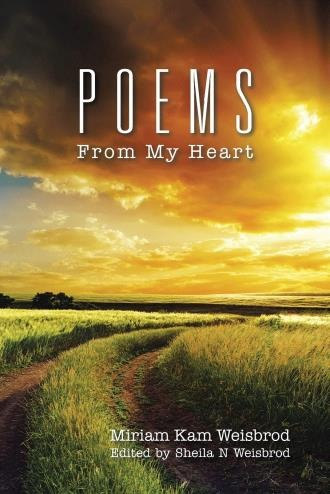

I
Remembering You
A rose is pressed between the pages of a book and kept there as a memory.
What is kepta pressed rose
Poetry by
Poems From My Heart
Paperback or ebook
Inside Poems From My Heart
The publisher's preview opens two of Miriam's poems. Each holds on to a memory through something that lasted.
I
A rose is pressed between the pages of a book and kept there as a memory.
What is kepta pressed rose
II
A fallen serviceman is remembered through his painted portrait.
What is kepta portrait
Across the collection, the publisher describes poems of memory, nature, growing older and the passing of time. Only these two are previewed; the rest are in the book.
Read them in Poems From My HeartThe poet
According to her publishers, Miriam Kam Weisbrod began writing poetry after the death of her husband, and had written more than two hundred poems when she decided, at 95, to see them published.
Two collections followed in 2015: Poems From My Heart in May, and A Rainbow of Poetry for Children in June.
Her second collection
With Pictures and Coloring Book

Whimsical poems about toys, nature, animals and imaginary characters, with pictures to look at and pages to color.
Archway Publishing · June 2015 · 68 pages · 8.5 × 11 in
Find it at Archway Publishing
Audiobook edition · 2026
Editions
Paperback & ebook
Miriam Kam Weisbrod, edited by Sheila N. Weisbrod · iUniverse, 2015 · 50 pages
ISBN 9781491767900 (paperback)
ISBN 9781491768006 (ebook)
Paperback & ebook · for children
Miriam Kam Weisbrod, illustrated by Barbara Silbert · Archway Publishing, 2015 · 68 pages
ISBN 9781480818934 (paperback)
ISBN 9781480818941 (ebook)
Audiobook
Narrated by Eleanor Vance · published by Sheila Weisbrod, 2026 · 49 min
ISBN 9780466830687
Google Play